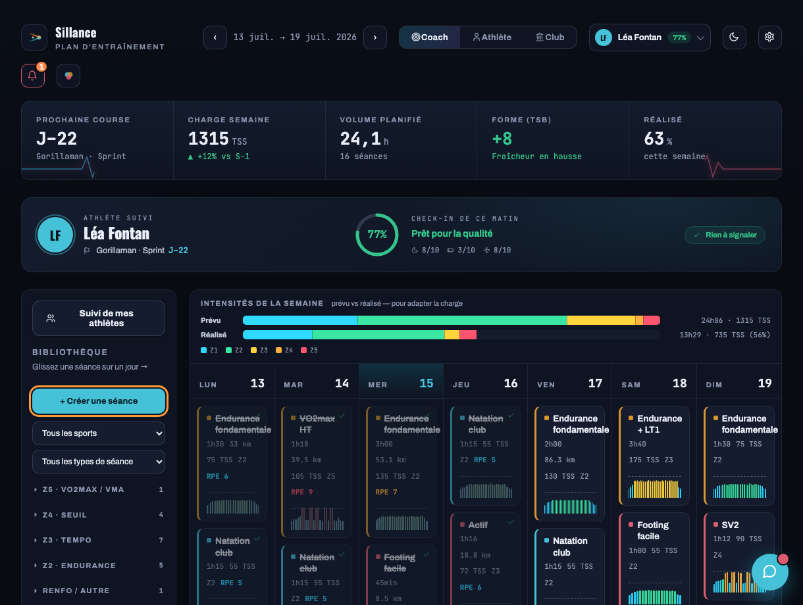
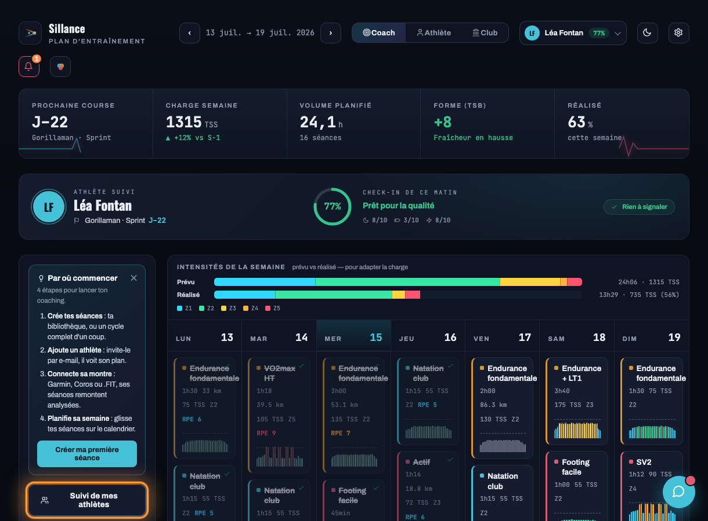
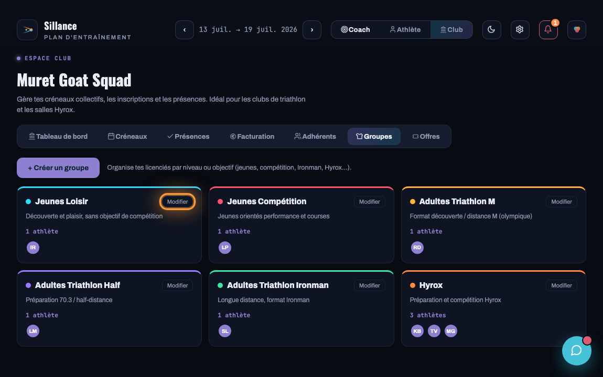
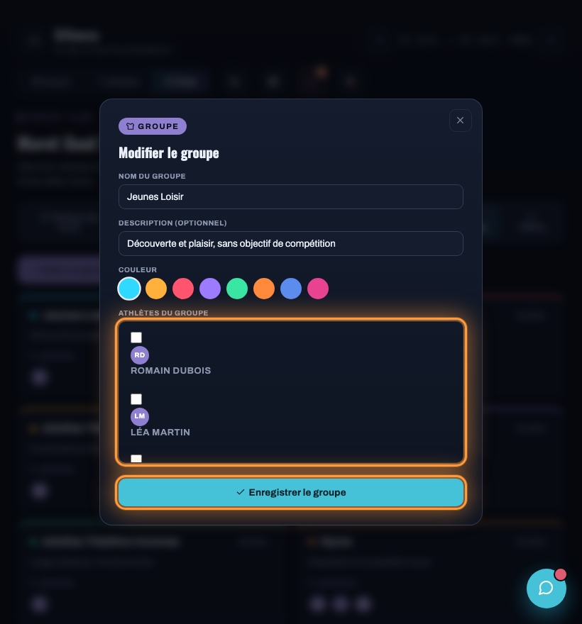
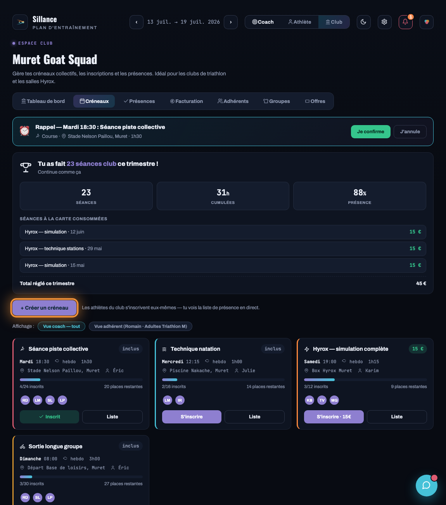
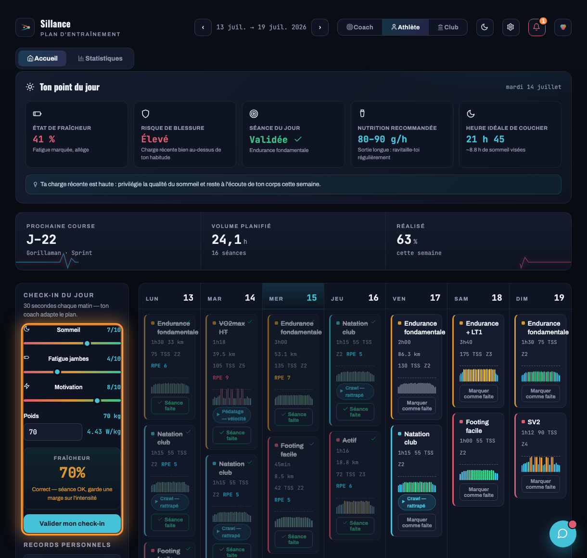

Aide & guide d'utilisation
Les tâches les plus courantes, pas à pas. Sur chaque capture, l'élément à utiliser est encadré en orange.
Changer de rôle. En haut de l'application, les trois boutons Coach, Athlète et Club font basculer l'affichage. Chaque guide ci-dessous précise le rôle à activer.
Espace coach
01 Créer une séance
Construis une séance dans ta bibliothèque, puis pose-la sur le calendrier.
- Active le rôle Coach. Le panneau Bibliothèque apparaît à gauche.
- Clique sur + Créer une séance.
- Renseigne la discipline, la durée, l'objectif, puis ajoute les blocs (échauffement, intervalles, retour au calme).
- Enregistre : la séance rejoint ta bibliothèque, prête à être planifiée.

02 Planifier une séance dans le calendrier
Une fois la séance créée, place-la sur le bon jour.
- Depuis la Bibliothèque, glisse une séance et dépose-la sur le jour voulu du calendrier.
- Autre méthode : survole un jour et clique le + qui apparaît dans son en-tête pour créer une séance directement à cette date.
- Une séance planifiée peut être re-déplacée d'un jour à l'autre par glisser-déposer.
Astuce. Pour poser un programme complet d'un coup, utilise + Créer un cycle sous la bibliothèque : plusieurs semaines de séances en un clic.
03 Suivre l'adhérence de mes athlètes
Vois d'un coup d'œil qui suit son plan et qui décroche.
- En rôle Coach, clique Suivi de mes athlètes, en haut du panneau de gauche.
- Le tableau liste tout ton roster : forme du jour, adhérence (séances réalisées vs prévues), prochaine course et un statut.
- Repère les athlètes en rouge (« Décroche ») pour les relancer en priorité.

Espace club
04 Déplacer un adhérent d'un groupe à l'autre
Un adhérent appartient à un seul groupe. Pour le déplacer, on le rattache au groupe d'arrivée.
- Active le rôle Club, puis ouvre l'onglet Groupes.
- Sur le groupe d'arrivée, clique Modifier.
- Dans Athlètes du groupe, coche l'adhérent à déplacer. Le cocher ici le retire automatiquement de son ancien groupe.
- Clique Enregistrer le groupe.


05 Créer un créneau (récurrent)
Un créneau collectif où les adhérents s'inscrivent eux-mêmes.
- Rôle Club, onglet Créneaux, clique + Créer un créneau.
- Choisis la discipline, l'intitulé, le jour et l'heure, le lieu et la capacité.
- Coche Chaque semaine pour un créneau récurrent (sinon, une séance ponctuelle datée).
- Assigne-le à un groupe si son contenu ne doit être visible que par ce groupe.
- Enregistre : les adhérents s'inscrivent seuls, tu vois la présence en direct.

Espace athlète
06 Faire son check-in du matin
Trente secondes chaque matin pour que le coach adapte le plan.
- Active le rôle Athlète. Le panneau Check-in du jour est à gauche.
- Règle les curseurs Sommeil, Fatigue et Motivation, et renseigne ton poids (le rapport W/kg se met à jour en direct).
- Ta fraîcheur se calcule automatiquement en dessous.
- Clique Valider mon check-in. Si ta forme est basse, ton coach est prévenu.
